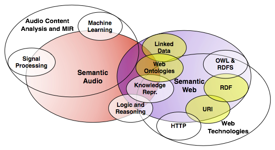

132nd AES Convention, 26th-29th of April, Budapest, Hungary
The emerging Semantic Web provides a powerful framework for the expression and reuse of structured data. Recent efforts have brought this framework to bear on the field of Semantic Audio, as well as information management in audio applications. This tutorial will provide an introduction to Semantic Web concepts and how they can be used in the context of music-related studies. We will outline the use of the Resource Description Framework (RDF) and related ontology and query languages. Using practical examples, we will demonstrate the use of the Music and Studio Ontologies, and show how they facilitate interoperability between audio applications and linked data sets on the Web. We will explore how signal processing tools and results can be described as structured data and utilised in audio production.
This tutorial focuses on the intersection of the fields of Semantic Audio and the Semantic Web.

Intended audience
This tutorial is targeted at researchers or students in Semantic Audio Analysis and Music Information Retrieval who may benefit from using the Web of Linked data as well as semantic audio tools that utilise Semantic Web technologies.
Metadata practitioners, archivists, and audio engineers interested in Semantic Audio applications and metadata management in the recording studio may also find it useful, and finally developers of Web-based music applications and mash-ups.
Outline
- Introduction to Semantic Audio and Semantic Web Technologies
- Motivations for using Semantic Web technologies in Semantic Audio
- Semantic Web Applications
- Short Hands on Session (1) Demonstrating how to query using SPARQL.
- The Music Ontology
- The Studio Ontology
- Semantic Audio Tools
- Short Hands on Session (2) demonstrating the use of Sonic Annotator and SAWA
- Semantic Audio in Music Production
Tutorial Slides
The tutorial slides are available in pdf.
Hands on sessions
Short hands on sessions will guide those who are new to Semantic Audio or the Semantic Web to access Linked Data resources (SPARQL end-points) and use high level tools for extracting meaningful information from audio content.
In particular we will use DBPedia and the SPARQL-Wrapper library in Python, and Sonic Annotator.
To install SPARQL-Wrapper you may use:
$ sudo easy_install SPARQLWrapper
and test it by executing the python code:
# import the library from SPARQLWrapper import SPARQLWrapper, JSON # (1) wrap the dbpedia SPARQL end-point endpoint = SPARQLWrapper("http://dbpedia.org/sparql") # (2) set the query string endpoint.setQuery(""" PREFIX rdfs: <http://www.w3.org/2000/01/rdf-schema#> PREFIX dbpr: <http://dbpedia.org/resource/> SELECT ?label WHERE { dbpr:Dave_Brubeck rdfs:label ?label } """) # (3) select the return format (e.g. XML, JSON etc...) endpoint.setReturnFormat(JSON) # (4) execute the query and convert into Python objects results = endpoint.query().convert() # (5) interpret the results: for res in results["results"]["bindings"] : print res['label']['value']
Note: The JSON returned by the SPARQL endpoint is converted to nested Python dictionaries, therefore additional parsing is not required.
To install and use Sonic Annotator, download the Sonic Annotator binary for your operating system, as well as a few Vamp Plugins (see the resources section below on where to find these), and then execute the commands:
# basic help $ sonic-annotator -h # list available transforms: $ sonic-annotator -l # run a simple feature extractor $ sonic-annotator -d vamp:transform:key -w rdf-stdout path/to/audio/file.mp3
In the last command you need to substitute vamp:transform:key with a key you obtained when using the list (-l) switch, and path/to/audio/file.mp3 with an existing .wav or .mp3 file on your machine.
Resources
1) Content-based audio analysis:
- Vamp Plugins are feature extractor plugins for content based analysis of musical audio. Vamp plugins are written using the open source Vamp plugin API, and return structured data resulting from a wrapped algorithm. They require a host application to run such as Sonic-Visualiser, Sonic-Annotator, Vamp-Simple-Host or Audacity. A large number of plugins are available for tasks such as Beat Tracking, Onset detection, Key and Tonality estimation, as well as lower level transformations like Spectrograms, Chromagrams, MFCCs or Wavelet transforms.
Available Plugins: http://vamp-plugins.org/download.html
How to install: http://vamp-plugins.org/download.html#install
- The Vamp Plugin API is a C/C++ plugin API for audio feature extraction. The API is conceptually similar to audio processing plugin APIs such as LADSPA or VST, however Vamp plugins return structured data describing the results of content based analysis as opposed to processed audio. The Vamp plugin API comes with an easy to use C++ SDK. Python bindings are also available using the VamPy wrapper plugin.
Developer’s Documentation:
http://vamp-plugins.org/develop.htmlAPI Documentation:
http://vamp-plugins.org/code-doc/index.htmlSource code:
http://vamp.svn.sourceforge.net/viewvc/vamp/vamp-plugin-sdk/trunk/ - VamPy is a wrapper plugin which provides Python bindings for the Vamp plugin API. VamPy may be installed as a conventional Vamp plugin. Once installed, it enables any Vamp host to use Python scripts as if they were compiled Vamp plugins. VamPy is open source and cross platform. Binaries are available for Linux, Mac, Windows and Solaris. To use VamPy, you have to be familiar with the Vamp C++ API, although in-depth knowledge of C++ is not required.
Available: http://vamp-plugins.org/vampy.html
Documentation:
http://vamp.svn.sourceforge.net/viewvc/vamp/vamp-vampy/trunk/READMESource code:
http://vamp.svn.sourceforge.net/viewvc/vamp/vamp-vampy/trunk/VamPy Example Plugin:
http://vamp.svn.sourceforge.net/viewvc/vamp/vamp-vampy/trunk/Example%20…VamPy Template Plugin:
http://github.com/kurtjx/MatWoD/blob/master/examples/scripts/vampy_temp…Tutorial: Getting Started with VamPy:
http://www.isophonics.net/content/getting-started-vampy - Sonic Visualiser is a cross platform application for visualising content-based audio features. It can host Vamp or VamPy feature extractor plugins written in C/C++ or Python.
Available: http://www.sonicvisualiser.org/
Documentation:
http://www.sonicvisualiser.org/documentation.htmlSource code:
http://sv1.svn.sourceforge.net/viewvc/sv1/sonic-visualiser/trunk/ - Sonic Annotator is a command line batch feature extractor. It hosts Vamp or VamPy plugins and produces results in RDF and CSV formats. It can analyse large collections of audio files on your machine or on a network resource.
Available: http://www.omras2.org/SonicAnnotator
Documentation: http://www.omras2.org/files/runner.pdf
Source code: http://sourceforge.net/projects/sv1/
- The Music Ontology is a Semantic Web ontology to describe music related information. It also provides the basis for numerous extensions including musicological and content-based features.
Specification: http://musicontology.com/
Available: http://purl.org/ontology/mo/
- RDF and Audio Features The Audio Feature Ontology can be used to express content based audio features in RDF format used on the Semantic Web. Sonic Annotator and SAWA can be used to produce annotations in this format.
The ontology is available here (RDF resource):
http://motools.sourceforge.net/af/Specification Document:
http://motools.sourceforge.net/doc/audio_features.html - Studio Ontology The Studio Ontology can be used to describe music production processes, including recording and audio processing workflow provenance. Four extensions are provided to describe recording, mixing, audio effects and multitrack music production tools.
See more information here http://www.isophonics.net/content/studio-ontology/
- DBTune hosts SPARQL end-points exposing interlinked music related data from Magnatune, Jamendo, The BBC John Peel sessions, Last-FM, MySpace and MusicBrainz .
Available: http://dbtune.org/
More information about the above (and related) SPARQL-endpoints can be found here.
- SAWA is a web application which ties some of the previously mentioned technologies together. It can be used as reference to familiarise yourself with Content-based Audio Analysis, Vamp Plugins, RDF and the Audio Feature Ontology. SAWA can be used to automatically extract features in batch from a small collection of uploaded audio files using several Vamp plugins at once.
Available: http://www.isophonics.net/sawa/
Brief introduction: http://www.isophonics.net/sawa/about
- Yanno is a web application to help music lessons in schools. It analyses YouTube videos, extract chords, and displays how to play the chords on the piano along with video files. The analysed chords are available as Linked Data (i.e. exposed as RDF which you may access using an RDF browser, or look at if your HTTP request Access header is set to text/turtle).
Available: http://yanno.eecs.qmul.ac.uk/
- CatfishSmooth is a web application which finds connections between music artists. It uses Linked Data and a number of Web services to find interesting common facts between artists and lets you browse the music space using intuitive new ways.
Available: http://catfishsmooth.net/
4) Related previous tutorials: - Linked Data Tutorial @ ISMIR A previous tutorial presented at the ISMIR conference in Kobe, Japan, provides lots of useful information about the technologies above, however it's main focus is "Music and the Semantic Web" a.k.a. Linked Data.
ISMIR tutorial page: http://ismir2009.grasstunes.net/
Slides: http://ismir2009.grasstunes.net/slides/
VamPy and Sonic Annotator tutorial:
http://ismir2009.grasstunes.net/slides/features-handson.htmlGithub Repository:
http://github.com/kurtjx/MatWoD
2) Ontologies and music related data resources:

3) Applications: